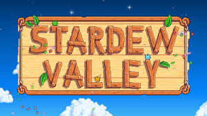
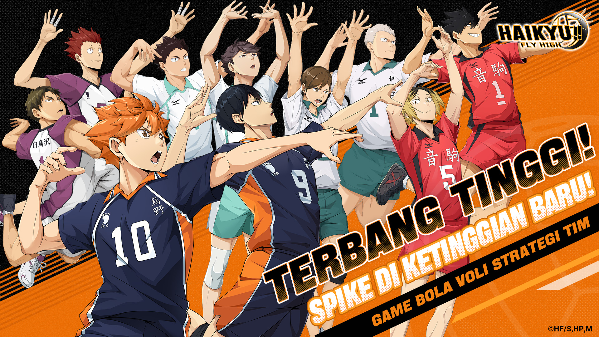
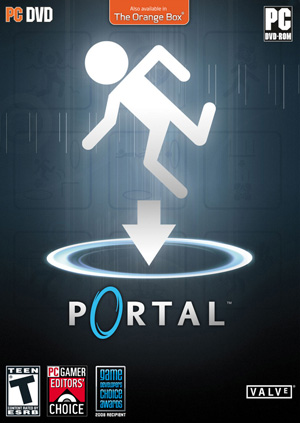

Rekomendasi Game "Sehat" 🎮✨
Nggak semua game itu toxic! Kalau dimainkan dengan seimbang, deretan game ini bisa melatih kreativitas, taktik, dan bikin pikiran lebih rileks.

Stardew Valley 🌾
Game bertani super *cozy*. Sangat ampuh buat *healing*, meredakan stres, dan melatih kesabaran dalam membangun sesuatu dari nol.

Minecraft 🧱
Kanvas digital paling bebas. Cocok untuk merancang arsitektur, bereksperimen dengan logika sirkuit, dan melatih imajinasi spasial 3D.
Toram Online ⚔️
MMORPG klasik yang melatih logika. Pemain harus memutar otak merancang kombinasi *skill* dan memahami sistem ekonomi pasar antar pemain.

Haikyuu!! Fly High 🏐
Game olahraga taktis. Kamu dilatih menyusun formasi yang tepat, memahami sinergi pemain, dan belajar semangat pantang menyerah.

Mobile Legends 🛡️
Kalau dimainkan tanpa *toxic*, game MOBA ini sangat bagus untuk melatih koordinasi tim, strategi rotasi, dan pengambilan keputusan instan.

Portal 2 🌀
Game asah otak tingkat dewa. Memaksa kamu berpikir di luar kotak (Out of the box) dengan memanfaatkan fisika dan portal teleportasi.